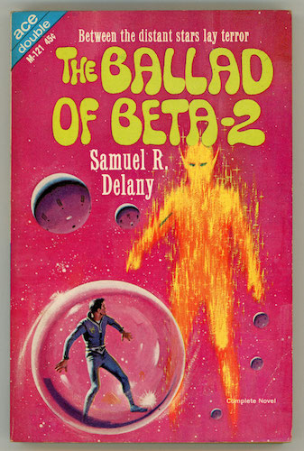

Reading list
What I'm reading now and what I've read in the past.
Reading now
Hospital Station, by James White (1962)

Past readings
Books I have read recently (most recently first).
Retief: Envoy to New Worlds, by Keith Laumer (1972)

The Ballad of Beta-2, by Samuel R. Delany (1965)

Damnation Alley, by Roger Zelazny (1977)

The Practicing Stoic: A Philosophical User's Manual. (May 2021)